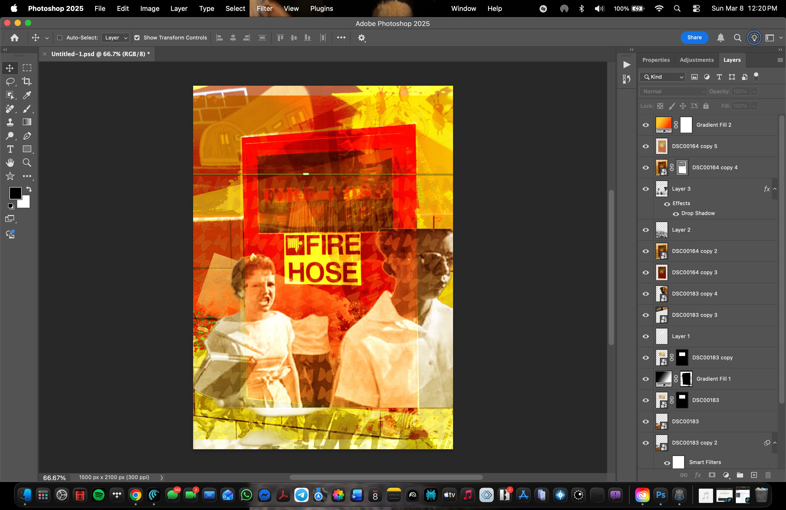
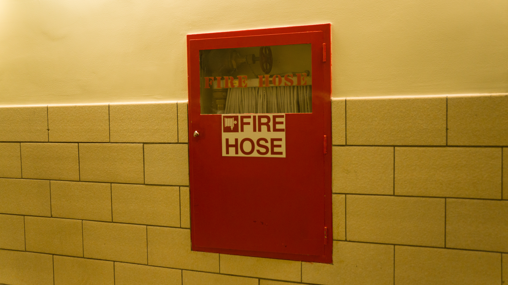
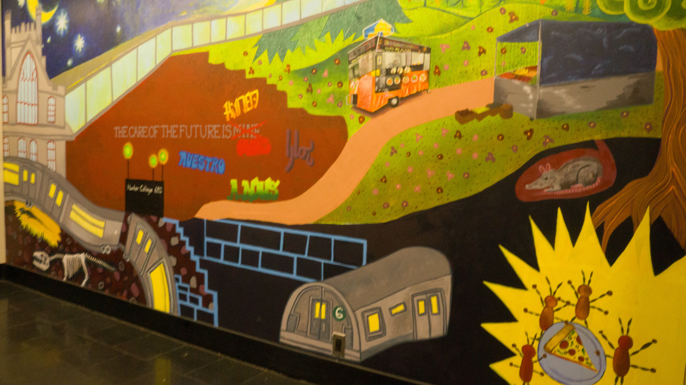

Week 3 Photomontage
Final Photomontage

Layers Panel Screenshot

Artist Statement
My photomontage centers around the fire hose cabinet, symbolizing how violence was ingrained in everyday public spaces, even within institutions meant to be safe. I layered archival images of the Little Rock students entering school, illustrating how ordinary actions like attending class were perceived as conflicts. The cabinet represents the pressure used to enforce segregation, while the students embody movement, courage, and the sacrifices made simply by showing up.
I used layer masking to blend the images, keeping the cabinet as the main focus while the historical photo stands out as a memory and context. I applied blending modes other than Normal and adjusted the opacity to create a poster-like collage that looks intentionally made rather than just realistic. The mural texture adds a modern layer, showing how history can be hidden or softened, even if the harmful structures are still there. My sources include my own photos of the fire hose cabinet and mural, along with public-domain images from the Little Rock integration era.
Sources
Personal photos:

Fire Hose Cabinet
MuralPublic domain: https://www.nga.gov/artworks/218354-title-caption-object-students-pass-without-incident
https://www.nga.gov/artworks/218354-title-caption-object-students-pass-without-incident